class: center, top background-image: url(img/turbocharged-tapir-5.jpg) # Turbocharging web socket integration for Tapir .footnote-center[ <a>Kamil Kloch</a> ] ??? Hello everyone. It looks that Tapir is ubiquitous on scalar this year not only on the stage, but in the lobby, **and even in the food truck**. This is great, it increases the change that stuff we will be talking about in the next 30 minutes will actually be useful and interesting, at least for some of you. So, Tapir on slide is riding a turbojet engine, which probably makes him the fastest tapir in Warsaw. The question is, why should we, Scala developers, care about it in the first place? Let's set the ground by citing **Scala Survey Results** 2023: the most frequent use-case for Scala is web / backend development - 87%. Which means Scala is predominantly used to **serialize / deserialize Json**, kind of sad but that's life. **Web servers** are **concurrent beasts**, Scala shines for web servers, having 2 thriving ecosystems TL / ZIO for writing concurrent and resource-safe code. Our company is no different, Scala powers our http servers, rest and websockets. We do use Scala for other projects as well, the most bizarre application being cats effect IOs all running in a single-threaded (caller thread) environment on the JVM, works great, but that is something for another talk. **What constitutes a web server?** You define REST / websocket endpoints, and plugin some business logic. Well, that is not all. You need to integrate it with other services, so you need to generate and actively maintain **documentation** (here the 2 widespread standards being OpenAPI for rest, ASyncApi for websockets). You probably need to provide a client as well. On top of that, you may want to try out a couple of different web servers, without the need implement the same thing again and again (e.g. translate Akka/Pekko Http endpoints to http4s or ZIO-http). **Like mathematicians, as Scala developers, we look for recurring patterns and constantly seek elegant abstractions**. Web servers are definitely such a case, and **tapir is one of the available answers**. Before we move on, one remark. This is a joint with Andriy Plokhotnyuk, who is sitting in the audience, hello Andriy. Andriy stands behind jsoniter-scala - arguably one of the fastest json libraries available on the JVM, and also putting much weight onto safety and correctness. Supports Scala 2 and 3. <!-- &*&*&*&*&*&*&*&*&*&*&*&*&*&*&*&*&*&*&*&*&*&*&*&*&*&*&*&*&*&*&*&*&*&*&*&*&*&*&*&*&*&*&*&*&*&*&*&*&*&*&*&*&*&*&* --> --- ## What is Tapir? <div style="float: right; margin-top: 1.5em;"> </div> .pull-left-60[ Describe HTTP API endpoints as immutable Scala values: ```scala case class Endpoint[ SECURITY_INPUT, INPUT, ERROR_OUTPUT, OUTPUT, -CAPABILITIES ] // CAPABILITIES == Any | Streams | WebSockets ``` ] -- .pull-left-60[ Interpret endpoint specification as - a server - a client - documentation ] ??? - how many know where the name comes from? - name: [T]yped [API] desc[R]iptions - With tapir you can **describe HTTP API endpoints as immutable Scala values**. - Each endpoint can contain a number of input parameters, error-output parameters, and normal-output parameters. - Tapir provides a programmer-friendly, reasonably type-safe API to expose, consume and document HTTP endpoints. - this is **quite impressive** <!-- &*&*&*&*&*&*&*&*&*&*&*&*&*&*&*&*&*&*&*&*&*&*&*&*&*&*&*&*&*&*&*&*&*&*&*&*&*&*&*&*&*&*&*&*&*&*&*&*&*&*&*&*&*&*&* --> --- ## Endpoint specification ```scala val getBooks = endpoint .description("Retrieve list of books.") .get ``` .absolute-20em[ .diff-add[ ```scala // SECURITY INPUT ERROR_OUTPUT OUTPUT CAPABILITIES Endpoint[Unit, Unit, Unit, Unit, Any ] ``` ]] ??? - **pitch slide** or tapir - description **enriches** OpenAPI <!-- &*&*&*&*&*&*&*&*&*&*&*&*&*&*&*&*&*&*&*&*&*&*&*&*&*&*&*&*&*&*&*&*&*&*&*&*&*&*&*&*&*&*&*&*&*&*&*&*&*&*&*&*&*&*&* --> --- ## Endpoint specification .diff-add[ ```scala val getBooks = endpoint .description("Retrieve list of books.") .get `.errorOut(jsonBody[ErrorResponse])` ``` ] .absolute-20em[ .diff-add[ ```scala // SECURITY INPUT ERROR_OUTPUT OUTPUT CAPABILITIES Endpoint[Unit, Unit, Unit, Unit, Any ] Endpoint[Unit, Unit, `ErrorResponse`, Unit, Any ] ``` ]] <!-- &*&*&*&*&*&*&*&*&*&*&*&*&*&*&*&*&*&*&*&*&*&*&*&*&*&*&*&*&*&*&*&*&*&*&*&*&*&*&*&*&*&*&*&*&*&*&*&*&*&*&*&*&*&*&* --> --- ## Endpoint specification .diff-add[ ```scala val getBooks = endpoint .description("Retrieve list of books.") .get .errorOut(jsonBody[ErrorResponse]) `.securityIn(header[String]("X-EXTERNAL-ID"))` ``` ] .absolute-20em[ .diff-add[ ```scala // SECURITY INPUT ERROR_OUTPUT OUTPUT CAPABILITIES Endpoint[Unit, Unit, Unit, Unit, Any ] Endpoint[Unit, Unit, ErrorResponse, Unit, Any ] Endpoint[`String`, Unit, ErrorResponse, Unit, Any ] ``` ]] <!-- &*&*&*&*&*&*&*&*&*&*&*&*&*&*&*&*&*&*&*&*&*&*&*&*&*&*&*&*&*&*&*&*&*&*&*&*&*&*&*&*&*&*&*&*&*&*&*&*&*&*&*&*&*&*&* --> --- ## Endpoint specification .diff-add[ ```scala val getBooks = endpoint .description("Retrieve list of books.") .get .errorOut(jsonBody[ErrorResponse]) .securityIn(header[String]("X-EXTERNAL-ID")) `.in("books" / path[String]("genre") / path[Int]("year"))` ``` ] .absolute-20em[ .diff-add[ ```scala // SECURITY INPUT ERROR_OUTPUT OUTPUT CAPABILITIES Endpoint[Unit, Unit, Unit, Unit, Any ] Endpoint[Unit, Unit, ErrorResponse, Unit, Any ] Endpoint[String, Unit, ErrorResponse, Unit, Any ] Endpoint[String, `(String, Int)`, ErrorResponse, Unit, Any ] ``` ]] <!-- &*&*&*&*&*&*&*&*&*&*&*&*&*&*&*&*&*&*&*&*&*&*&*&*&*&*&*&*&*&*&*&*&*&*&*&*&*&*&*&*&*&*&*&*&*&*&*&*&*&*&*&*&*&*&* --> --- ## Endpoint specification .diff-add[ ```scala val getBooks = endpoint .description("Retrieve list of books.") .get .errorOut(jsonBody[ErrorResponse]) .securityIn(header[String]("X-EXTERNAL-ID")) .in("books" / path[String]("genre") / path[Int]("year")) * .in(query[Int]("limit") * .default(100) * .description("Maximum number of books to retrieve")) ``` ] .absolute-20em[ .diff-add[ ```scala // SECURITY INPUT ERROR_OUTPUT OUTPUT CAPABILITIES Endpoint[Unit, Unit, Unit, Unit, Any ] Endpoint[Unit, Unit, ErrorResponse, Unit, Any ] Endpoint[String, Unit, ErrorResponse, Unit, Any ] Endpoint[String, (String, Int), ErrorResponse, Unit, Any ] Endpoint[String, `(String, Int, Int)`, ErrorResponse, Unit, Any ] ``` ]] ??? - endpoint is an **immutable value** that can be used to derive more complex endpoints <!-- &*&*&*&*&*&*&*&*&*&*&*&*&*&*&*&*&*&*&*&*&*&*&*&*&*&*&*&*&*&*&*&*&*&*&*&*&*&*&*&*&*&*&*&*&*&*&*&*&*&*&*&*&*&*&* --> --- ## Endpoint specification .diff-add[ ```scala val getBooks = endpoint .description("Retrieve list of books.") .get .errorOut(jsonBody[ErrorResponse]) .securityIn(header[String]("X-EXTERNAL-ID")) .in("books" / path[String]("genre") / path[Int]("year")) .in(query[Int]("limit") .default(100) .description("Maximum number of books to retrieve")) * .mapInTo[GetBooksRequest] ``` ] .absolute-20em[ .diff-add[ ```scala // SECURITY INPUT ERROR_OUTPUT OUTPUT CAPABILITIES Endpoint[Unit, Unit, Unit, Unit, Any ] Endpoint[Unit, Unit, ErrorResponse, Unit, Any ] Endpoint[String, Unit, ErrorResponse, Unit, Any ] Endpoint[String, (String, Int), ErrorResponse, Unit, Any ] Endpoint[String, (String, Int, Int), ErrorResponse, Unit, Any ] Endpoint[String, `GetBooksRequest`, ErrorResponse, Unit, Any ] ``` ]] ??? we do note like n-tuples, tapir has macro-based combinators which translate an n-tuple into an n-case class, compile time. <!-- &*&*&*&*&*&*&*&*&*&*&*&*&*&*&*&*&*&*&*&*&*&*&*&*&*&*&*&*&*&*&*&*&*&*&*&*&*&*&*&*&*&*&*&*&*&*&*&*&*&*&*&*&*&*&* --> --- ## Endpoint specification .diff-add[ ```scala val getBooks = endpoint .description("Retrieve list of books.") .get .errorOut(jsonBody[ErrorResponse]) .securityIn(header[String]("X-EXTERNAL-ID")) .in("books" / path[String]("genre") / path[Int]("year")) .in(query[Int]("limit") .default(100) .description("Maximum number of books to retrieve")) .mapInTo[GetBooksRequest] `.out(jsonBody[List[Book]])` ``` ] .absolute-20em[ .diff-add[ ```scala // SECURITY INPUT ERROR_OUTPUT OUTPUT CAPABILITIES Endpoint[Unit, Unit, Unit, Unit, Any ] Endpoint[Unit, Unit, ErrorResponse, Unit, Any ] Endpoint[String, Unit, ErrorResponse, Unit, Any ] Endpoint[String, (String, Int), ErrorResponse, Unit, Any ] Endpoint[String, (String, Int, Int), ErrorResponse, Unit, Any ] Endpoint[String, GetBooksRequest, ErrorResponse, Unit, Any ] Endpoint[String, GetBooksRequest, ErrorResponse, `List[Book]`, Any ] ``` ]] <!-- &*&*&*&*&*&*&*&*&*&*&*&*&*&*&*&*&*&*&*&*&*&*&*&*&*&*&*&*&*&*&*&*&*&*&*&*&*&*&*&*&*&*&*&*&*&*&*&*&*&*&*&*&*&*&* --> --- ## Web sockets <br /> .text-center[ 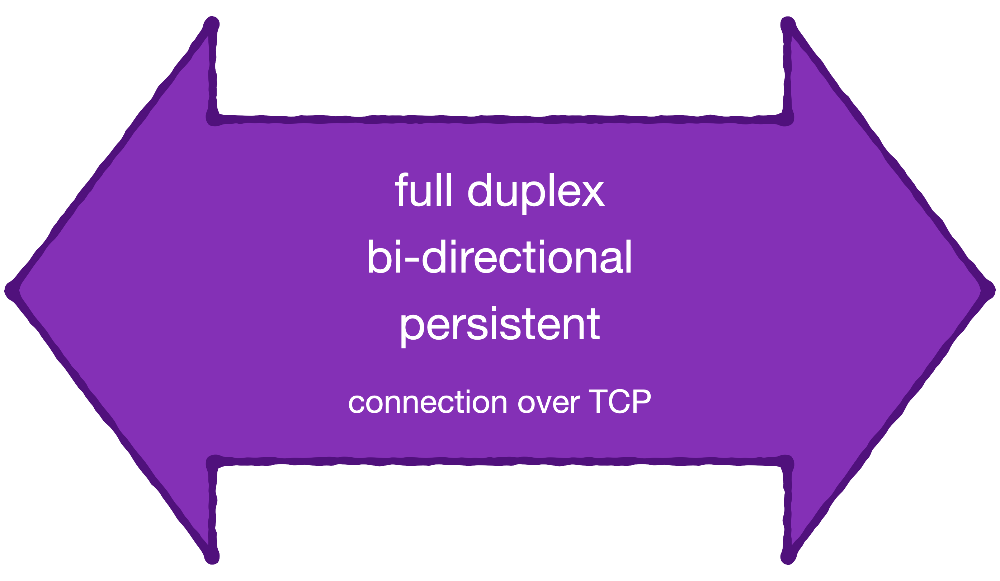 ] ??? use-cases: - low latency real time price updates, live streaming - chat applications - gaming <!-- &*&*&*&*&*&*&*&*&*&*&*&*&*&*&*&*&*&*&*&*&*&*&*&*&*&*&*&*&*&*&*&*&*&*&*&*&*&*&*&*&*&*&*&*&*&*&*&*&*&*&*&*&*&*&* --> --- ## Web sockets in Java ```java @ServerEndpoint(value = "/public") public class PublicWs { @OnOpen public void onOpen(Session session) throws IOException { // Get session and WebSocket connection } @OnMessage public void onMessage(Session session, Message message) throws IOException { // Handle new messages } @OnClose public void onClose(Session session) throws IOException { // WebSocket connection closes } @OnError public void onError(Session session, Throwable throwable) {} } ``` ??? - how do we model a full duplex asynchronous protocol? - standard way - callbacks <!-- &*&*&*&*&*&*&*&*&*&*&*&*&*&*&*&*&*&*&*&*&*&*&*&*&*&*&*&*&*&*&*&*&*&*&*&*&*&*&*&*&*&*&*&*&*&*&*&*&*&*&*&*&*&*&* --> --- ## Web sockets in Java .dimmed[ ```java @ServerEndpoint(value = "/public") public class PublicWs { @OnOpen public void onOpen(Session session) throws IOException { // Get session and WebSocket connection } @OnMessage public void onMessage(Session session, Message message) throws IOException { // Handle new messages } @OnClose public void onClose(Session session) throws IOException { // WebSocket connection closes } @OnError public void onError(Session session, Throwable throwable) {} } ``` ] .footnote-center-8em[ .xxlarge[🤔 ] ] ??? - callbacks will surely do the job, but not in the most scala way, if you will - can we do better? <!-- &*&*&*&*&*&*&*&*&*&*&*&*&*&*&*&*&*&*&*&*&*&*&*&*&*&*&*&*&*&*&*&*&*&*&*&*&*&*&*&*&*&*&*&*&*&*&*&*&*&*&*&*&*&*&* --> --- ## Web sockets in (functional) Scala .pull-left-75[ ```scala Stream[IO, A] ``` - models an incremental change of reality - produces 0 or more values of type A, (via effect `IO[A])` - some of those values may be available in the future ] <div style="float: right; margin-top: 1.5em; text-align:center;"> <img src="img/fs2.png" height="150"> <br /> <span style="font-size: 1.5em;>"><a href="https://fs2.io">FS2</a></span> </div> ??? - luckily, we hard about the streams already - models an incremental change of reality - produces 0 or more values of type A, (via effect `IO[A])` - some of those values may be available in the future - Scala is lucky to have 2 streaming libs: the OG fs2 and ZIO-Streams - **fs2** - to some extent a pinnacle of effect libraries - **predates** CE3, some concepts in CE3 are directly copied from fs2 - **so we have a great library, let's use it** -- .pull-clear[ <br /> .large[ ```scala Stream[IO, WebSocketFrame] => Stream[IO, WebSocketFrame] ``` ]] ??? - functional, effectful, concurrent streams for Scala - a single callback — `IO[WebSocketFrame]` - (an infinite) stream of callbacks (input) — `Stream[IO, WebSocketFrame]` - (an infinite) stream of output messages — `Stream[IO, WebSocketFrame]` <!-- &*&*&*&*&*&*&*&*&*&*&*&*&*&*&*&*&*&*&*&*&*&*&*&*&*&*&*&*&*&*&*&*&*&*&*&*&*&*&*&*&*&*&*&*&*&*&*&*&*&*&*&*&*&*&* --> --- ## Tapir — web socket endpoint ```scala val ws = endpoint .get .in("ws") .out( webSocketBody[WsRequest, CF.Json, WsMessage, CF.Json](Fs2Streams[IO]) ) ``` ??? - **so how do we describe** ws endpoint in tapir? <!-- &*&*&*&*&*&*&*&*&*&*&*&*&*&*&*&*&*&*&*&*&*&*&*&*&*&*&*&*&*&*&*&*&*&*&*&*&*&*&*&*&*&*&*&*&*&*&*&*&*&*&*&*&*&*&* --> --- ## Tapir — web socket endpoint ```scala val ws: Endpoint[ Unit, // SECURITY_INPUT Unit, // INPUT Unit, // ERROR_OUTPUT Stream[IO, WsRequest] => Stream[IO, WsMessage], // OUTPUT Fs2Streams[IO] with WebSockets // CAPABILITIES ] = endpoint .get .in("ws") .out( webSocketBody[WsRequest, CF.Json, WsMessage, CF.Json](Fs2Streams[IO]) ) ``` ??? - Stream from high-level, BL input type in to high-level BL output type <!-- &*&*&*&*&*&*&*&*&*&*&*&*&*&*&*&*&*&*&*&*&*&*&*&*&*&*&*&*&*&*&*&*&*&*&*&*&*&*&*&*&*&*&*&*&*&*&*&*&*&*&*&*&*&*&* --> --- class: top, center <h2 style="border-bottom: none;">A web socket server</h2> ??? - ws server can serve many purposes - **our use-case**: live update of real-time financial data - **think stock exchange** with live prices, trades etc - updates arrive at **fixed interval**, say 100ms <!-- &*&*&*&*&*&*&*&*&*&*&*&*&*&*&*&*&*&*&*&*&*&*&*&*&*&*&*&*&*&*&*&*&*&*&*&*&*&*&*&*&*&*&*&*&*&*&*&*&*&*&*&*&*&*&* --> --- class: center, top background-image: url(img/broken-belt.jpg) <!-- &*&*&*&*&*&*&*&*&*&*&*&*&*&*&*&*&*&*&*&*&*&*&*&*&*&*&*&*&*&*&*&*&*&*&*&*&*&*&*&*&*&*&*&*&*&*&*&*&*&*&*&*&*&*&* --> --- ## Web socket server optimizations <span style="display: inline-block; border-bottom: font-weight: bold; none;margin-top:1em; font-size:1.8em;"> <span style="font-size:2.2em;">👉</span> What are the performance requirements? </span> <span style="display: inline-block; width: 5.7em"></span>average throughput / tail latency / ... <span style="display: inline-block; border-bottom: font-weight: bold; none;margin-top:1em; font-size:1.8em;"> <span style="font-size:2.2em;">🏎</span> How to benchmark? </span> <span style="display: inline-block; border-bottom: font-weight: bold; none;margin-top:1em; font-size:1.8em;"> <span style="font-size:2.2em;">🔧</span> What to optimize? </span> ??? 1. what does it mean "slow" / "fast"? - different use-cases different needs - **establish a metric to optimize** 2. Benchmarking - **tough one** - **pitfalls** - simulate **real-world** usage - **measurement overhead** - **non-uniform** user behavior - **caching effects** - etc 3. Primarily tapir, but not only that. <!-- &*&*&*&*&*&*&*&*&*&*&*&*&*&*&*&*&*&*&*&*&*&*&*&*&*&*&*&*&*&*&*&*&*&*&*&*&*&*&*&*&*&*&*&*&*&*&*&*&*&*&*&*&*&*&* --> --- ## Service level expectation (SLE) .pull-left-30[ Latency: - <span style="display: inline-block; width: 3.8em">min</span> < 1ms - <span style="display: inline-block; width: 3.8em">90%</span> < 2ms - <span style="display: inline-block; width: 3.8em">99%</span> < 4ms - <span style="display: inline-block; width: 3.8em">99.9%</span> < 8ms - <span style="display: inline-block; width: 3.8em">99.99%</span> < 16ms - ... - <span style="display: inline-block; width: 3.8em">max</span> < 512ms ] .pull-right-70[ 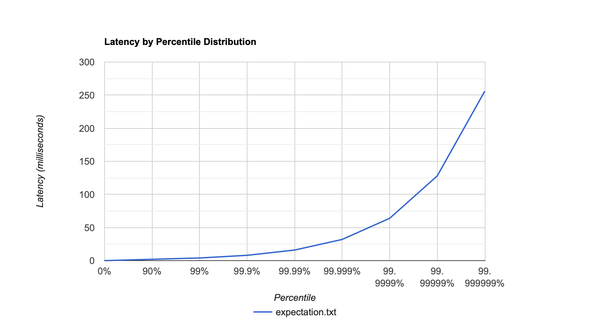 ] ??? - here go the requirements. - What do we want the **latency** to **BEHAVE** like - latency distribution - **important pic** - strongly **multi-modal** (average perf, stddev useless at best) - **Measurements should provide data to evaluate requirements** - **Always measure Max time**. Consider what it means. - subtle topic, **easy** to do it wrong and **draw WRONG** conclusions - watch Gil Tene talk -- .pull-clear[ .text-center[ <br /><br /> Watch <a href="https://www.youtube.com/watch?v=ElbYf2uiPmQ">Understanding Latency & Application Responsiveness</a> by Gil Tene ]] <!-- &*&*&*&*&*&*&*&*&*&*&*&*&*&*&*&*&*&*&*&*&*&*&*&*&*&*&*&*&*&*&*&*&*&*&*&*&*&*&*&*&*&*&*&*&*&*&*&*&*&*&*&*&*&*&* --> --- ## Benchmark setup - separate .large[💻] server and .large[💻] client - synchronized .large[🕰]️ ??? - quite **different** from rest benchmark - **no request/response** - running server close to the limits, **minimize influence of the client** - **clocks synchronized** - **latency** induced by the **server** -- ### Server - message every 100ms, contains server timestamp 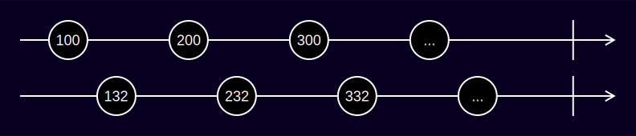 -- ### [Gatling] client - ramps up to 10 / 25 / 50k users within 30s - each user consumes 600 messages (total duration 60s) - `abs(clientTimestamp - serverTimestamp)` stored into an [HdrHistogram](https://github.com/HdrHistogram/HdrHistogram) <!-- &*&*&*&*&*&*&*&*&*&*&*&*&*&*&*&*&*&*&*&*&*&*&*&*&*&*&*&*&*&*&*&*&*&*&*&*&*&*&*&*&*&*&*&*&*&*&*&*&*&*&*&*&*&*&* --> --- ## Gatling report .text-center[ 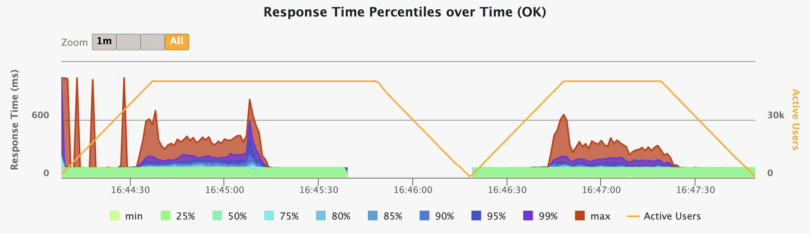 <br /> 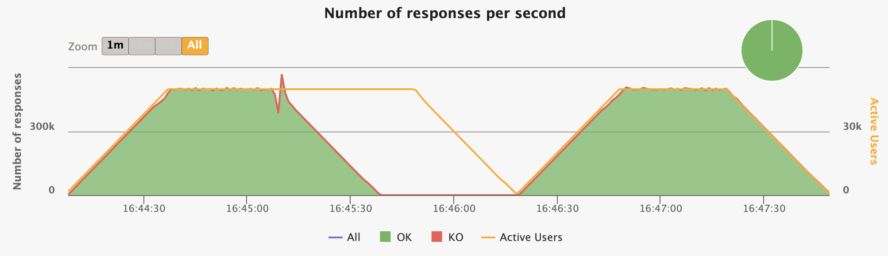 ] <!-- &*&*&*&*&*&*&*&*&*&*&*&*&*&*&*&*&*&*&*&*&*&*&*&*&*&*&*&*&*&*&*&*&*&*&*&*&*&*&*&*&*&*&*&*&*&*&*&*&*&*&*&*&*&*&* --> --- ## Gatling report <br /> .text-center[ #### Gatling response time metric is meaningless for websockets. 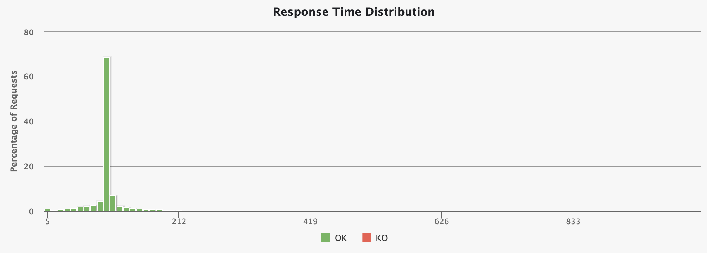 ] <!-- &*&*&*&*&*&*&*&*&*&*&*&*&*&*&*&*&*&*&*&*&*&*&*&*&*&*&*&*&*&*&*&*&*&*&*&*&*&*&*&*&*&*&*&*&*&*&*&*&*&*&*&*&*&*&* --> --- ## Latency measurement ### Ideal case 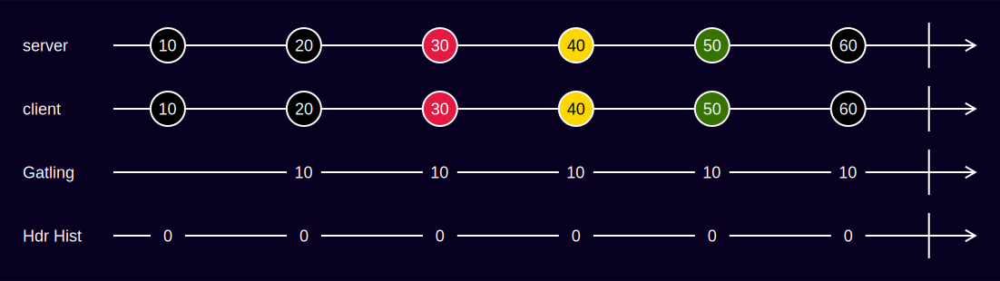 <!-- &*&*&*&*&*&*&*&*&*&*&*&*&*&*&*&*&*&*&*&*&*&*&*&*&*&*&*&*&*&*&*&*&*&*&*&*&*&*&*&*&*&*&*&*&*&*&*&*&*&*&*&*&*&*&* --> --- ## Server under heavy load (1) ### Skip/aggregate delayed packets 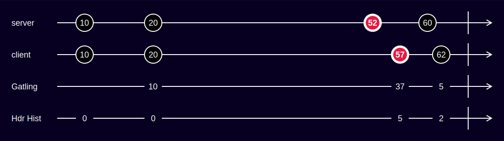 <!-- &*&*&*&*&*&*&*&*&*&*&*&*&*&*&*&*&*&*&*&*&*&*&*&*&*&*&*&*&*&*&*&*&*&*&*&*&*&*&*&*&*&*&*&*&*&*&*&*&*&*&*&*&*&*&* --> --- ## Server under heavy load (2) ### Replay delayed packets 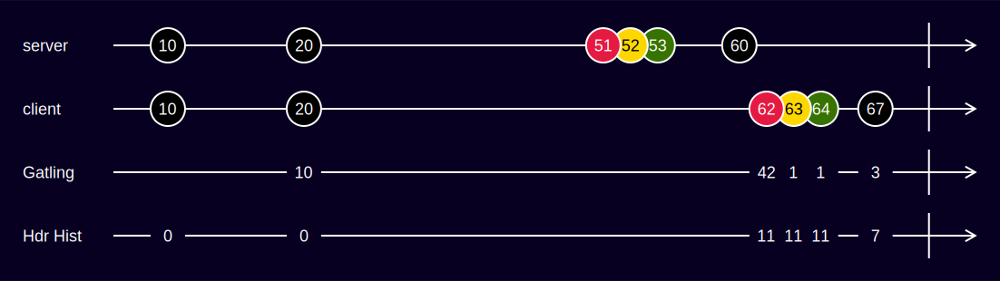 <!-- &*&*&*&*&*&*&*&*&*&*&*&*&*&*&*&*&*&*&*&*&*&*&*&*&*&*&*&*&*&*&*&*&*&*&*&*&*&*&*&*&*&*&*&*&*&*&*&*&*&*&*&*&*&*&* --> --- ## Server under heavy load (3) ### Replay delayed packets, **rewind timestamps** 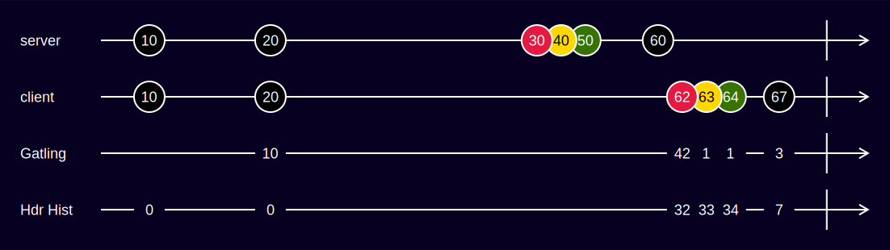 <!-- &*&*&*&*&*&*&*&*&*&*&*&*&*&*&*&*&*&*&*&*&*&*&*&*&*&*&*&*&*&*&*&*&*&*&*&*&*&*&*&*&*&*&*&*&*&*&*&*&*&*&*&*&*&*&* --> --- ## Coordinated ommission 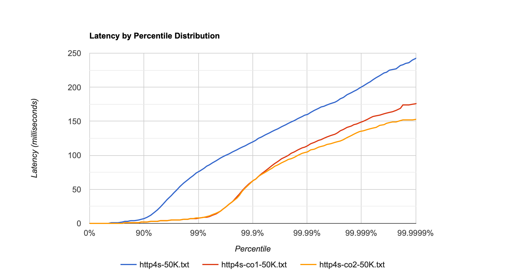 <!-- &*&*&*&*&*&*&*&*&*&*&*&*&*&*&*&*&*&*&*&*&*&*&*&*&*&*&*&*&*&*&*&*&*&*&*&*&*&*&*&*&*&*&*&*&*&*&*&*&*&*&*&*&*&*&* --> --- class: center, top # Tapir 1.6.0 ??? - time machine, 1.6.0 released 8 months ago. <!-- &*&*&*&*&*&*&*&*&*&*&*&*&*&*&*&*&*&*&*&*&*&*&*&*&*&*&*&*&*&*&*&*&*&*&*&*&*&*&*&*&*&*&*&*&*&*&*&*&*&*&*&*&*&*&* --> --- ## Tapir 1.6.0, 8.3k users .text-center[ 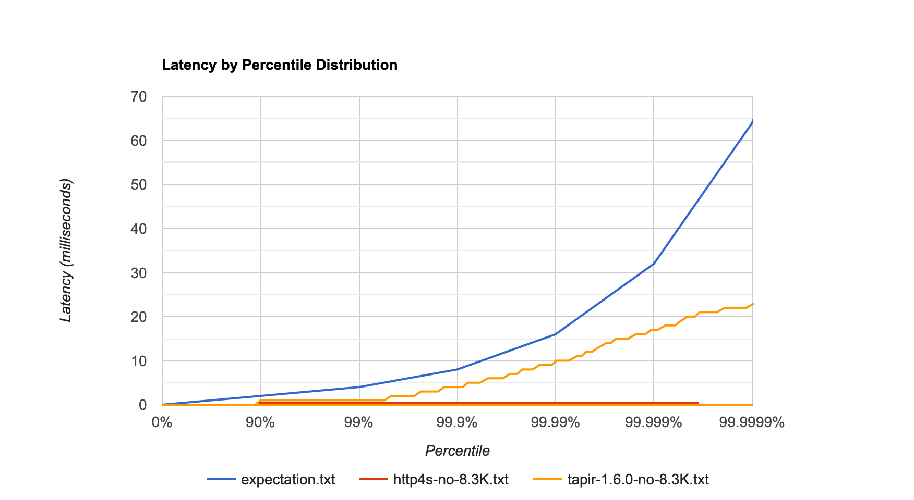 ] ??? - **largest possible number of users** fitting SLE <!-- &*&*&*&*&*&*&*&*&*&*&*&*&*&*&*&*&*&*&*&*&*&*&*&*&*&*&*&*&*&*&*&*&*&*&*&*&*&*&*&*&*&*&*&*&*&*&*&*&*&*&*&*&*&*&* --> --- ## http4s, 15.3k vs 15.4k users .text-center[ 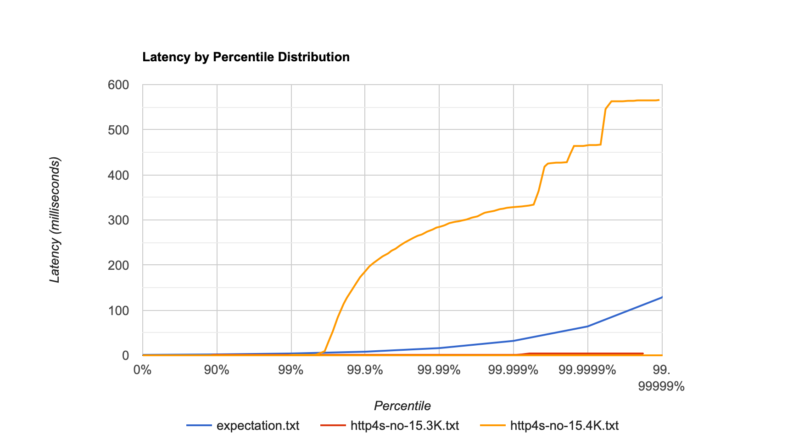 ] ??? - this is what happens when you go overboard. - ZGC compaction of old gen. using load barriers <!-- &*&*&*&*&*&*&*&*&*&*&*&*&*&*&*&*&*&*&*&*&*&*&*&*&*&*&*&*&*&*&*&*&*&*&*&*&*&*&*&*&*&*&*&*&*&*&*&*&*&*&*&*&*&*&* --> --- class: center, top background-image: url(img/belt-repair.jpg) <h2 style="border-bottom: none; margin-top:10em;"><span style="font-weight: bold; font-size:5em;">?</span></h2> <!-- &*&*&*&*&*&*&*&*&*&*&*&*&*&*&*&*&*&*&*&*&*&*&*&*&*&*&*&*&*&*&*&*&*&*&*&*&*&*&*&*&*&*&*&*&*&*&*&*&*&*&*&*&*&*&* --> --- class: center, top background-image: url(img/cube.jpg) <h2 style="border-bottom: none;">Performance optimizations</h2> .large[.bold[ OS<span style="display: inline-block; width: 7em; margin-top:1.6em;"></span>JVM server<span style="display: inline-block; width: 8em; margin-top:7em;"></span>libraries <span style="display: inline-block; margin-top:1.5em;">business logic</span> ]] ??? - **started 8 months ago**, discovering along the way - OS: /etc/sysctl.conf: memory, fs, networking - JVM: Java version, ZGC, generational GC, TLAB, pretouch - server: .withMaxConnections(maxConnections) .withDefaultTcpNoDelay .withDefaultSocketReuseAddress - libraries: CE tracing, compute pool sizes, core logic - business logic <!-- &*&*&*&*&*&*&*&*&*&*&*&*&*&*&*&*&*&*&*&*&*&*&*&*&*&*&*&*&*&*&*&*&*&*&*&*&*&*&*&*&*&*&*&*&*&*&*&*&*&*&*&*&*&*&* --> --- class: center, top # Tapir 1.6.0.super[*] ??? - squeezed all changes from 8 months outside tapir <!-- &*&*&*&*&*&*&*&*&*&*&*&*&*&*&*&*&*&*&*&*&*&*&*&*&*&*&*&*&*&*&*&*&*&*&*&*&*&*&*&*&*&*&*&*&*&*&*&*&*&*&*&*&*&*&* --> --- ## Changes in 1.6.0.super[*] .left-column[ ### JVM - JDK 17 --> JDK 22 <br /> (.green[**ZGC generational**] with latest patches) - -XX:+UseZGC, -XX:+ZGenerational - -XX:+UseTransparentHugePages, ... ### OS - proper conf. for `transparent_hugepage` - optimizations in `/etc/sysctl.conf` ### Tapir http4s server options - disable Tapir server log ] .right-column[ ### http4s web socket builder - withDefragment(false) - withFilterPingPongs(false) ### blaze server - withDefaultTcpNoDelay - withDefaultSocketReuseAddress ### CE - disabled tracing ] .pull-clear[.text-center[ <br /> ### zero changes in Tapir code ]] ??? OS: swap, memory, netowrking <!-- &*&*&*&*&*&*&*&*&*&*&*&*&*&*&*&*&*&*&*&*&*&*&*&*&*&*&*&*&*&*&*&*&*&*&*&*&*&*&*&*&*&*&*&*&*&*&*&*&*&*&*&*&*&*&* --> --- ## Tapir 1.6.0.super[*], 8.3k users .text-center[ 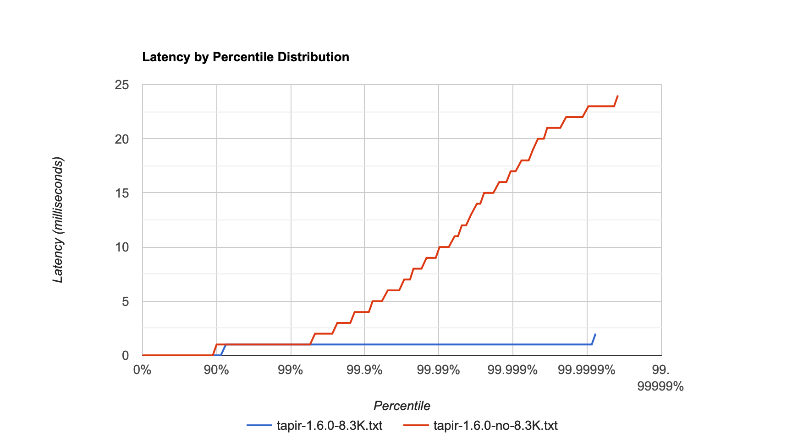 ] <!-- &*&*&*&*&*&*&*&*&*&*&*&*&*&*&*&*&*&*&*&*&*&*&*&*&*&*&*&*&*&*&*&*&*&*&*&*&*&*&*&*&*&*&*&*&*&*&*&*&*&*&*&*&*&*&* --> --- ## Tapir 1.6.0.super[*], 11k users .text-center[ 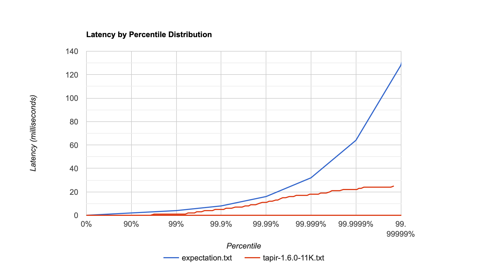 ] ??? - http4s missing, > 40k, we are lagging behind. - what do we do next? - finally turn in to tapir code <!-- &*&*&*&*&*&*&*&*&*&*&*&*&*&*&*&*&*&*&*&*&*&*&*&*&*&*&*&*&*&*&*&*&*&*&*&*&*&*&*&*&*&*&*&*&*&*&*&*&*&*&*&*&*&*&* --> --- ## async profiler flame graph - http4s .text-center[ 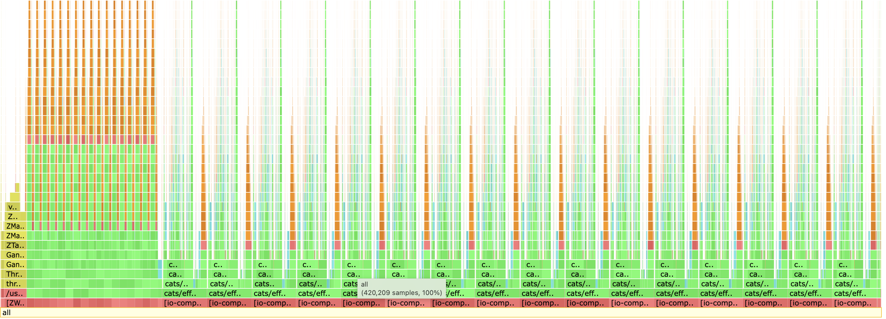 ] Sampled CPU cycles: - <span style="display: inline-block; width: 3em;">total:</span>420k - <span style="display: inline-block; width: 3em;">GC:</span>12k (2.8% samples) ??? - what takes tapir so long? - let's compare flame graphs - async profiler - sampling profiler - here only CPU cycles - **interactive** - stay on safe side - no switching apps <!-- &*&*&*&*&*&*&*&*&*&*&*&*&*&*&*&*&*&*&*&*&*&*&*&*&*&*&*&*&*&*&*&*&*&*&*&*&*&*&*&*&*&*&*&*&*&*&*&*&*&*&*&*&*&*&* --> --- ## async profiler flame graph - Tapir .text-center[ 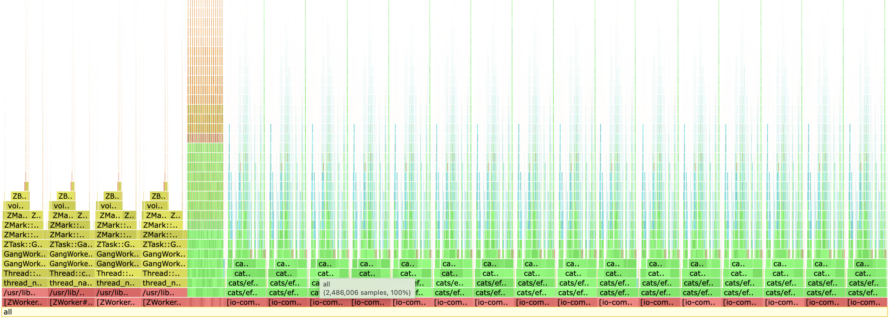 ] Sampled CPU cycles: - <span style="display: inline-block; width: 3em;">total:</span>2.48M (.orange[**5.9x**] http4s) - <span style="display: inline-block; width: 3em;">GC:</span>520k (21% samples) ??? - where to look? <!-- &*&*&*&*&*&*&*&*&*&*&*&*&*&*&*&*&*&*&*&*&*&*&*&*&*&*&*&*&*&*&*&*&*&*&*&*&*&*&*&*&*&*&*&*&*&*&*&*&*&*&*&*&*&*&* --> --- ## blaze thread - Tapir .text-center[ 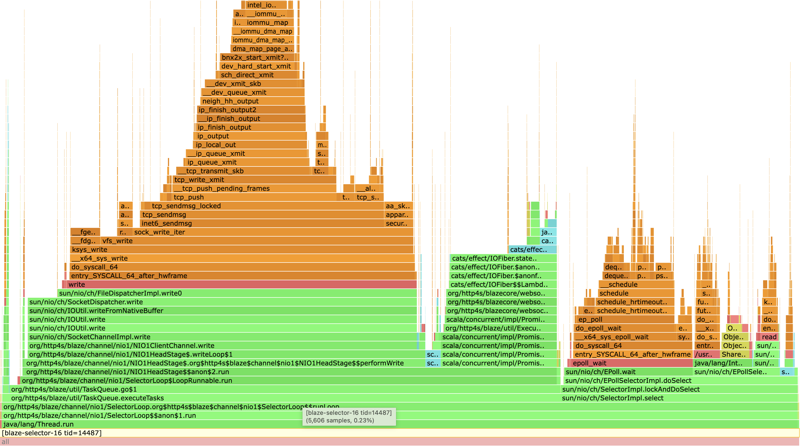 ] <!-- &*&*&*&*&*&*&*&*&*&*&*&*&*&*&*&*&*&*&*&*&*&*&*&*&*&*&*&*&*&*&*&*&*&*&*&*&*&*&*&*&*&*&*&*&*&*&*&*&*&*&*&*&*&*&* --> --- ## CE thread - http4s .text-center[ 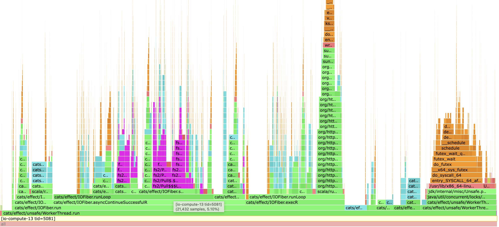 ] Sampled CPU cycles: - <span style="display: inline-block; width: 3em;">total:</span>21.4k - <span style="display: inline-block; width: 3em;">fs2:</span>13.77% (2.9k) ??? - parking cycles - let's pretend we do Crtl-F "fs2" <!-- &*&*&*&*&*&*&*&*&*&*&*&*&*&*&*&*&*&*&*&*&*&*&*&*&*&*&*&*&*&*&*&*&*&*&*&*&*&*&*&*&*&*&*&*&*&*&*&*&*&*&*&*&*&*&* --> --- ## CE thread - Tapir .text-center[ 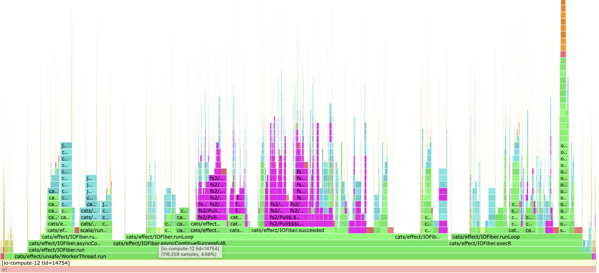 ] Sampled CPU cycles: - <span style="display: inline-block; width: 3em;">total:</span>116k (.orange[**5.4x**] http4s) - <span style="display: inline-block; width: 3em;">fs2:</span>28.26% (32.8k - .orange[**11.3x**] http4s) <!-- &*&*&*&*&*&*&*&*&*&*&*&*&*&*&*&*&*&*&*&*&*&*&*&*&*&*&*&*&*&*&*&*&*&*&*&*&*&*&*&*&*&*&*&*&*&*&*&*&*&*&*&*&*&*&* --> --- class: center, top # Tapir 1.6.3 <!-- &*&*&*&*&*&*&*&*&*&*&*&*&*&*&*&*&*&*&*&*&*&*&*&*&*&*&*&*&*&*&*&*&*&*&*&*&*&*&*&*&*&*&*&*&*&*&*&*&*&*&*&*&*&*&* --> --- ## Http4sServerInterpreter .left-column[ Before: .diff-rm[ ```scala pipeF.flatMap { pipe => * val send: Stream[F, WebSocketFrame] = Stream.repeatEval(queue.take) * val receive = pipe.andThen(s => s.evalMap(f => queue.offer(f))) webSocketBuilder match { case Some(wsb) => wsb.withHeaders(headers).build(`send, receive`) ``` ] ] .diff-add[ .right-column[ After: ```scala pipeF.flatMap { pipe => webSocketBuilder match { case Some(wsb) => wsb.withHeaders(headers).build(`pipe`) ``` ]] ??? - removing unnecessary wrapping <!-- &*&*&*&*&*&*&*&*&*&*&*&*&*&*&*&*&*&*&*&*&*&*&*&*&*&*&*&*&*&*&*&*&*&*&*&*&*&*&*&*&*&*&*&*&*&*&*&*&*&*&*&*&*&*&* --> --- ## Tapir 1.6.3, 11k users .text-center[ 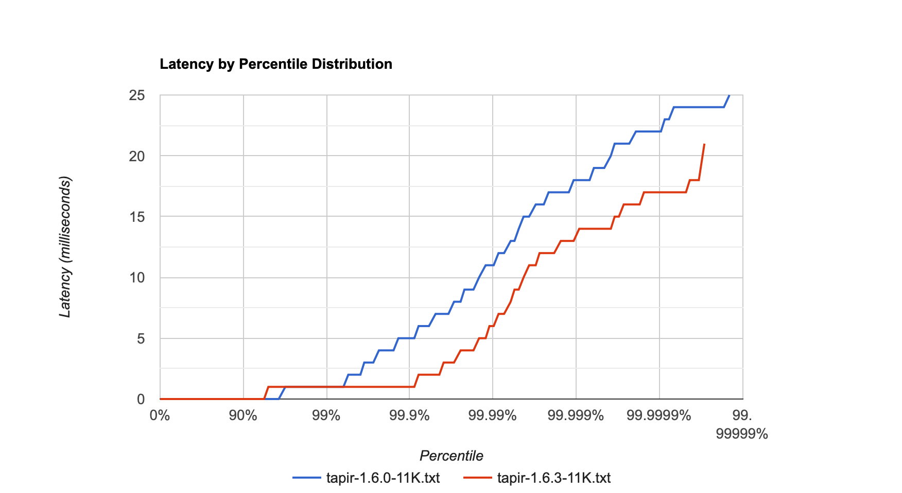 ] <!-- &*&*&*&*&*&*&*&*&*&*&*&*&*&*&*&*&*&*&*&*&*&*&*&*&*&*&*&*&*&*&*&*&*&*&*&*&*&*&*&*&*&*&*&*&*&*&*&*&*&*&*&*&*&*&* --> --- ## Tapir 1.6.3, 11.8k users .text-center[ 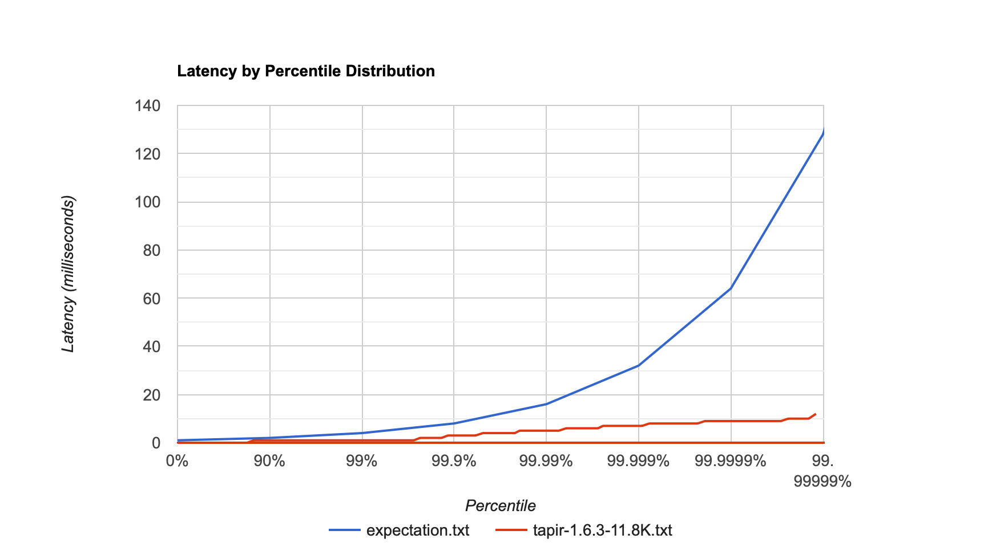 ] ??? - still below 40k pulled of by http4s - so we kept looking into Tapir code <!-- &*&*&*&*&*&*&*&*&*&*&*&*&*&*&*&*&*&*&*&*&*&*&*&*&*&*&*&*&*&*&*&*&*&*&*&*&*&*&*&*&*&*&*&*&*&*&*&*&*&*&*&*&*&*&* --> --- ## Web socket endpoint configuration ```scala case class WebSocketBodyOutput( ... concatenateFragmentedFrames: Boolean, ignorePong: Boolean, autoPongOnPing: Boolean, decodeCloseRequests: Boolean, decodeCloseResponses: Boolean, autoPing: Option[(FiniteDuration, WebSocketFrame.Ping)] ) ``` (Abstraction layer over clients / servers) ??? - sorry for that, I need to show you some code - configuration **abstracted** over servers - **comes at a cost** <!-- &*&*&*&*&*&*&*&*&*&*&*&*&*&*&*&*&*&*&*&*&*&*&*&*&*&*&*&*&*&*&*&*&*&*&*&*&*&*&*&*&*&*&*&*&*&*&*&*&*&*&*&*&*&*&* --> --- ## http4s interpreter ```scala def pipeToBody( pipe: Stream[F, REQ] => Stream[F, RESP], o: WebSocketBodyOutput ): Stream[F, Http4sWebSocketFrame] => Stream[F, Http4sWebSocketFrame] ``` ??? - there has to be a place, where - high-level BL streams converted back and forth into low-level streams <!-- &*&*&*&*&*&*&*&*&*&*&*&*&*&*&*&*&*&*&*&*&*&*&*&*&*&*&*&*&*&*&*&*&*&*&*&*&*&*&*&*&*&*&*&*&*&*&*&*&*&*&*&*&*&*&* --> --- ## http4s interpreter ```scala def pipeToBody( `pipe: Stream[F, REQ] => Stream[F, RESP]`, o: WebSocketBodyOutput ): Stream[F, Http4sWebSocketFrame] => Stream[F, Http4sWebSocketFrame] ``` <!-- &*&*&*&*&*&*&*&*&*&*&*&*&*&*&*&*&*&*&*&*&*&*&*&*&*&*&*&*&*&*&*&*&*&*&*&*&*&*&*&*&*&*&*&*&*&*&*&*&*&*&*&*&*&*&* --> --- ## http4s interpreter ```scala def pipeToBody( pipe: Stream[F, REQ] => Stream[F, RESP], `o: WebSocketBodyOutput` ): Stream[F, Http4sWebSocketFrame] => Stream[F, Http4sWebSocketFrame] ``` <!-- &*&*&*&*&*&*&*&*&*&*&*&*&*&*&*&*&*&*&*&*&*&*&*&*&*&*&*&*&*&*&*&*&*&*&*&*&*&*&*&*&*&*&*&*&*&*&*&*&*&*&*&*&*&*&* --> --- ## http4s interpreter ```scala def pipeToBody( pipe: Stream[F, REQ] => Stream[F, RESP], o: WebSocketBodyOutput ): `Stream[F, Http4sWebSocketFrame] => Stream[F, Http4sWebSocketFrame]` ``` <!-- &*&*&*&*&*&*&*&*&*&*&*&*&*&*&*&*&*&*&*&*&*&*&*&*&*&*&*&*&*&*&*&*&*&*&*&*&*&*&*&*&*&*&*&*&*&*&*&*&*&*&*&*&*&*&* --> --- ## http4s interpreter ```scala def pipeToBody( pipe: Stream[F, REQ] => Stream[F, RESP], o: WebSocketBodyOutput ): Stream[F, Http4sWebSocketFrame] => Stream[F, Http4sWebSocketFrame] = { (in: Stream[F, Http4sWebSocketFrame]) => in .map(toSttpFrame) // Stream[F, sttp.WebSocketFrame] .map(decodeTo[REQ]) // Stream[F, REQ] * .through(pipe) // Stream[F, RESP] .map(encode) // Stream[F, sttp.WebSocketFrame] .mergeHaltL(autoPongs) .mergeHaltL(autoPings) .map(toHttp4sFrame) // Stream[F, Http4sWebSocketFrame] } ``` Business logic. ??? 1. lift to sttp WsFrame (sttp abstraction over low-level WS frames) - the majority of that has to done - what about those merges? <!-- &*&*&*&*&*&*&*&*&*&*&*&*&*&*&*&*&*&*&*&*&*&*&*&*&*&*&*&*&*&*&*&*&*&*&*&*&*&*&*&*&*&*&*&*&*&*&*&*&*&*&*&*&*&*&* --> --- ## Merging fs2 streams ```scala val s = Stream.eval(IO.pure(0)).repeatN(1024) val r1 = s.merge(s) val r2 = Stream(s, s).parJoinUnbounded ``` .text-center[ 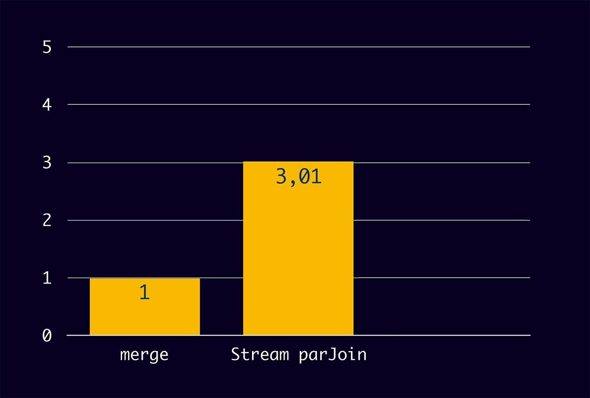 ] ??? - micro-benchmark can be tricky - results deceiving - we did it anyway <!-- &*&*&*&*&*&*&*&*&*&*&*&*&*&*&*&*&*&*&*&*&*&*&*&*&*&*&*&*&*&*&*&*&*&*&*&*&*&*&*&*&*&*&*&*&*&*&*&*&*&*&*&*&*&*&* --> --- .left-column[.smaller-bottom-margin[ ```scala Stream(s1, s2).parJoinUnbounded ``` ] .tiny[.smaller-top-margin[ ```scala def parJoin(maxOpen: Int)(implicit F: Concurrent[F]): Stream[F, O] = { assert(maxOpen > 0, s"maxOpen must be > 0, was: $maxOpen") if (maxOpen === 1) outer.flatten else { val fstream: F[Stream[F, O]] = for { done <- SignallingRef(none[Option[Throwable]]) available <- Semaphore(maxOpen.toLong) running <- SignallingRef(1) outcomes <- Channel.unbounded[F, F[Unit]] output <- Channel.synchronous[F, Chunk[O]] } yield { def stop(rslt: Option[Throwable]): F[Unit] = done.update { case rslt0 @ Some(Some(err0)) => rslt.fold[Option[Option[Throwable]]](rslt0) { err => Some(Some(CompositeFailure(err0, err))) } case _ => Some(rslt) } val incrementRunning: F[Unit] = running.update(_ + 1) val decrementRunning: F[Unit] = running.updateAndGet(_ - 1) .flatMap(now => if (now == 0) outcomes.close.void else F.unit) def onOutcome(oc: Outcome[F, Throwable, Unit], cancelResult: Either[Throwable, Unit]): F[Unit] = oc match { case Outcome.Succeeded(fu) => cancelResult.fold(t => stop(Some(t)), _ => outcomes.send(fu).void) case Outcome.Errored(t) => CompositeFailure .fromResults(Left(t), cancelResult).fold(t => stop(Some(t)), _ => F.unit) case Outcome.Canceled() => cancelResult.fold(t => stop(Some(t)), _ => F.unit) } def runInner(inner: Stream[F, O], outerScope: Scope[F]): F[Unit] = F.uncancelable { _ => outerScope.lease .flatTap(_ => available.acquire >> incrementRunning) .flatMap { lease => F.start { inner.chunks.foreach(s => output.send(s).void) .interruptWhen(done.map(_.nonEmpty)) .compile.drain .guaranteeCase { oc => lease.cancel.rethrow.guaranteeCase { case Outcome.Succeeded(fu) => onOutcome(oc <* Outcome.succeeded(fu), Either.unit) case Outcome.Errored(e) => onOutcome(oc, Either.left(e)) case _ => F.unit }.forceR(available.release >> decrementRunning) }.voidError }.void } } ``` ]]] .right-column[.tiny[ ```scala def runOuter: F[Unit] = F.uncancelable { _ => outer .flatMap(inner => Pull .getScope[F] .flatMap(outerScope => Pull.eval(runInner(inner, outerScope))) .streamNoScope ) .drain.interruptWhen(done.map(_.nonEmpty)) .compile.drain .guaranteeCase(onOutcome(_, Either.unit) >> decrementRunning) .voidError } def outcomeJoiner: F[Unit] = outcomes.stream .foreach(identity) .compile.drain .guaranteeCase { case Outcome.Succeeded(_) => stop(None) >> output.close.void case Outcome.Errored(t) => stop(Some(t)) >> output.close.void case Outcome.Canceled() => stop(None) >> output.close.void } .voidError def signalResult(fiber: Fiber[F, Throwable, Unit]): F[Unit] = done.get.flatMap { blah => blah.flatten.fold[F[Unit]](fiber.joinWithNever)(F.raiseError) } Stream .bracket(F.start(runOuter) >> F.start(outcomeJoiner)) { fiber => stop(None) >> running.waitUntil(_ == 0) >> signalResult(fiber) } .flatMap { _ => output.stream.flatMap(Stream.chunk) } } Stream.eval(fstream).flatten } } ``` ]] ??? - Too powerful - Stream[Stream] - perhaps we can shave off some cycles here - what if we changed to List[Stream]? <!-- &*&*&*&*&*&*&*&*&*&*&*&*&*&*&*&*&*&*&*&*&*&*&*&*&*&*&*&*&*&*&*&*&*&*&*&*&*&*&*&*&*&*&*&*&*&*&*&*&*&*&*&*&*&*&* --> --- .dimmed[.left-column[.smaller-bottom-margin[ ```scala Stream(s1, s2).parJoinUnbounded ``` ] .tiny[.smaller-top-margin[ ```scala def parJoin(maxOpen: Int)(implicit F: Concurrent[F]): Stream[F, O] = { assert(maxOpen > 0, s"maxOpen must be > 0, was: $maxOpen") if (maxOpen === 1) outer.flatten else { val fstream: F[Stream[F, O]] = for { done <- SignallingRef(none[Option[Throwable]]) available <- Semaphore(maxOpen.toLong) running <- SignallingRef(1) outcomes <- Channel.unbounded[F, F[Unit]] output <- Channel.synchronous[F, Chunk[O]] } yield { def stop(rslt: Option[Throwable]): F[Unit] = done.update { case rslt0 @ Some(Some(err0)) => rslt.fold[Option[Option[Throwable]]](rslt0) { err => Some(Some(CompositeFailure(err0, err))) } case _ => Some(rslt) } val incrementRunning: F[Unit] = running.update(_ + 1) val decrementRunning: F[Unit] = running.updateAndGet(_ - 1) .flatMap(now => if (now == 0) outcomes.close.void else F.unit) def onOutcome(oc: Outcome[F, Throwable, Unit], cancelResult: Either[Throwable, Unit]): F[Unit] = oc match { case Outcome.Succeeded(fu) => cancelResult.fold(t => stop(Some(t)), _ => outcomes.send(fu).void) case Outcome.Errored(t) => CompositeFailure .fromResults(Left(t), cancelResult).fold(t => stop(Some(t)), _ => F.unit) case Outcome.Canceled() => cancelResult.fold(t => stop(Some(t)), _ => F.unit) } def runInner(inner: Stream[F, O], outerScope: Scope[F]): F[Unit] = F.uncancelable { _ => outerScope.lease .flatTap(_ => available.acquire >> incrementRunning) .flatMap { lease => F.start { inner.chunks.foreach(s => output.send(s).void) .interruptWhen(done.map(_.nonEmpty)) .compile.drain .guaranteeCase { oc => lease.cancel.rethrow.guaranteeCase { case Outcome.Succeeded(fu) => onOutcome(oc <* Outcome.succeeded(fu), Either.unit) case Outcome.Errored(e) => onOutcome(oc, Either.left(e)) case _ => F.unit }.forceR(available.release >> decrementRunning) }.voidError }.void } } ``` ]]]] .right-column[.tiny[.dimmed[ ```scala def runOuter: F[Unit] = F.uncancelable { _ => outer .flatMap(inner => Pull .getScope[F] .flatMap(outerScope => Pull.eval(runInner(inner, outerScope))) .streamNoScope ) .drain.interruptWhen(done.map(_.nonEmpty)) .compile.drain .guaranteeCase(onOutcome(_, Either.unit) >> decrementRunning) .voidError } def outcomeJoiner: F[Unit] = outcomes.stream .foreach(identity) .compile.drain .guaranteeCase { case Outcome.Succeeded(_) => stop(None) >> output.close.void case Outcome.Errored(t) => stop(Some(t)) >> output.close.void case Outcome.Canceled() => stop(None) >> output.close.void } .voidError def signalResult(fiber: Fiber[F, Throwable, Unit]): F[Unit] = done.get.flatMap { blah => blah.flatten.fold[F[Unit]](fiber.joinWithNever)(F.raiseError) } Stream .bracket(F.start(runOuter) >> F.start(outcomeJoiner)) { fiber => stop(None) >> running.waitUntil(_ == 0) >> signalResult(fiber) } .flatMap { _ => output.stream.flatMap(Stream.chunk) } } Stream.eval(fstream).flatten } } ``` ]] .smaller-bottom-margin[ ```scala List(s1, s2).parJoinUnbounded ``` ] .tiny[.smaller-top-margin[ ```scala def parJoinUnbounded(implicit F: Concurrent[F]): Stream[F, O] = if (xs.nonEmpty && xs.tail.nonEmpty) { Stream.eval(Channel.synchronous[F, Chunk[O]]).flatMap { c => val outcomes = xs .parTraverse_(_.chunks.foreach(x => c.send(x).void).compile.drain) .guarantee(c.close.void) Stream .bracket(F.start(outcomes))(f => f.cancel >> f.joinWithUnit) >> c.stream.unchunks } } else xs.headOption.getOrElse(Stream.empty) ``` ]]] <!-- &*&*&*&*&*&*&*&*&*&*&*&*&*&*&*&*&*&*&*&*&*&*&*&*&*&*&*&*&*&*&*&*&*&*&*&*&*&*&*&*&*&*&*&*&*&*&*&*&*&*&*&*&*&*&* --> --- ## Merging fs2 streams ```scala val s = Stream.eval(IO.pure(0)).repeatN(1024) val r1 = s.merge(s) val r2 = Stream(s, s).parJoinUnbounded val r3 = List(s, s).parJoinUnbounded ``` .text-center[ 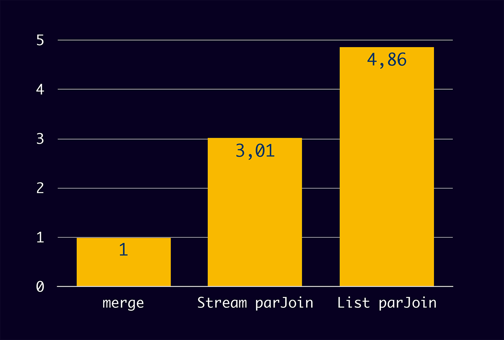 ] <!-- &*&*&*&*&*&*&*&*&*&*&*&*&*&*&*&*&*&*&*&*&*&*&*&*&*&*&*&*&*&*&*&*&*&*&*&*&*&*&*&*&*&*&*&*&*&*&*&*&*&*&*&*&*&*&* --> --- class: center, top # Tapir 1.10.0 .text-center[ ] <!-- &*&*&*&*&*&*&*&*&*&*&*&*&*&*&*&*&*&*&*&*&*&*&*&*&*&*&*&*&*&*&*&*&*&*&*&*&*&*&*&*&*&*&*&*&*&*&*&*&*&*&*&*&*&*&* --> --- ## Tapir 1.10.0, 11.8k users .text-center[ 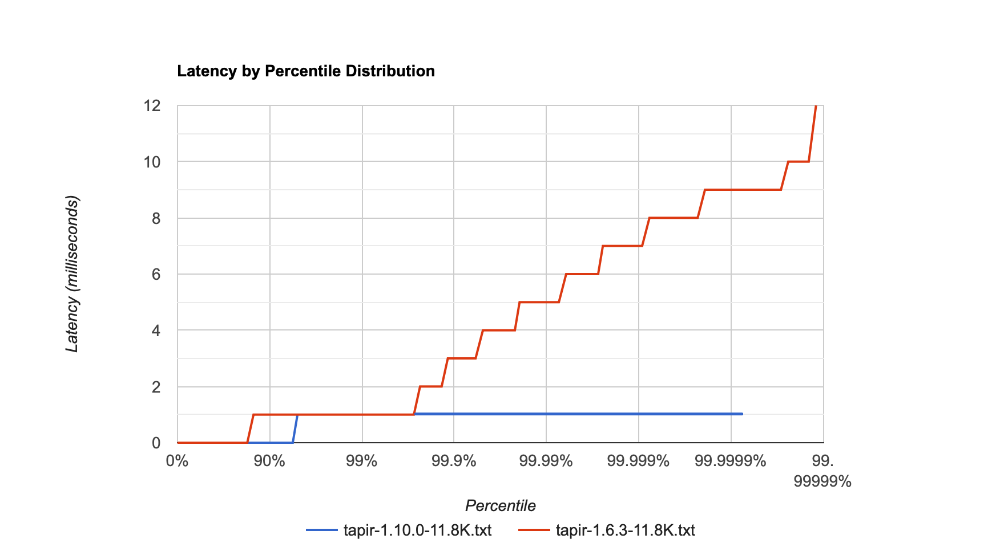 ] <!-- &*&*&*&*&*&*&*&*&*&*&*&*&*&*&*&*&*&*&*&*&*&*&*&*&*&*&*&*&*&*&*&*&*&*&*&*&*&*&*&*&*&*&*&*&*&*&*&*&*&*&*&*&*&*&* --> --- ## Tapir 1.10.0, 24.7k users .text-center[ 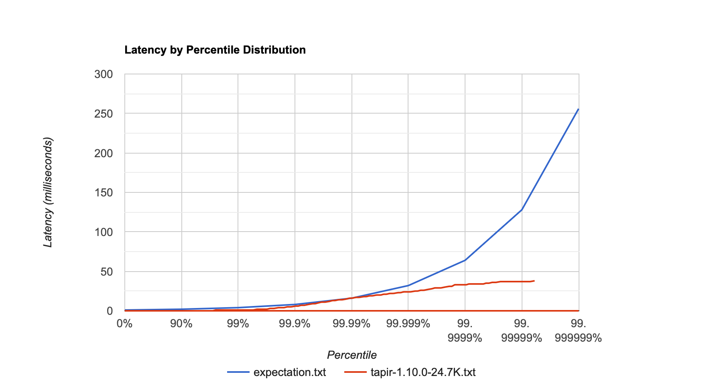 ] <!-- &*&*&*&*&*&*&*&*&*&*&*&*&*&*&*&*&*&*&*&*&*&*&*&*&*&*&*&*&*&*&*&*&*&*&*&*&*&*&*&*&*&*&*&*&*&*&*&*&*&*&*&*&*&*&* --> --- ## Merging fs2 streams ```scala val s = Stream.eval(IO.pure(0)).repeatN(1024) val r1 = s.merge(Stream.empty) val r2 = Stream(s, Stream.empty).parJoinUnbounded val r3 = List(s, Stream.empty).parJoinUnbounded val r4 = s ``` .text-center[ 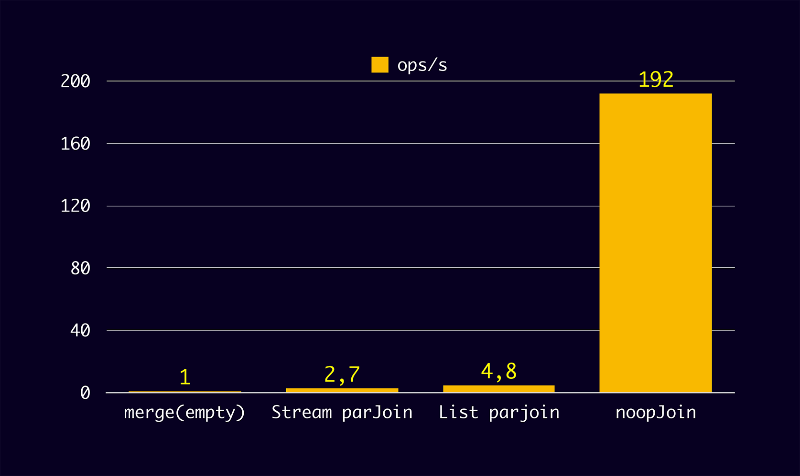 ] <!-- &*&*&*&*&*&*&*&*&*&*&*&*&*&*&*&*&*&*&*&*&*&*&*&*&*&*&*&*&*&*&*&*&*&*&*&*&*&*&*&*&*&*&*&*&*&*&*&*&*&*&*&*&*&*&* --> --- class: center, top # Tapir 1.10.0 FP .text-center[ ] <!-- &*&*&*&*&*&*&*&*&*&*&*&*&*&*&*&*&*&*&*&*&*&*&*&*&*&*&*&*&*&*&*&*&*&*&*&*&*&*&*&*&*&*&*&*&*&*&*&*&*&*&*&*&*&*&* --> --- ## Tapir 1.10.0 Fast Path, 24.7k users .text-center[ 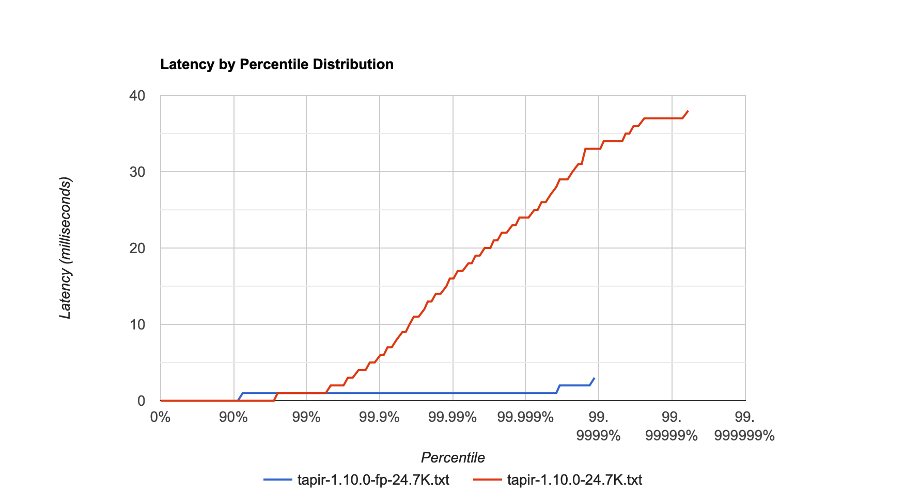 ] <!-- &*&*&*&*&*&*&*&*&*&*&*&*&*&*&*&*&*&*&*&*&*&*&*&*&*&*&*&*&*&*&*&*&*&*&*&*&*&*&*&*&*&*&*&*&*&*&*&*&*&*&*&*&*&*&* --> --- ## Tapir 1.10.0 Fast Path, 41.6k users .text-center[ 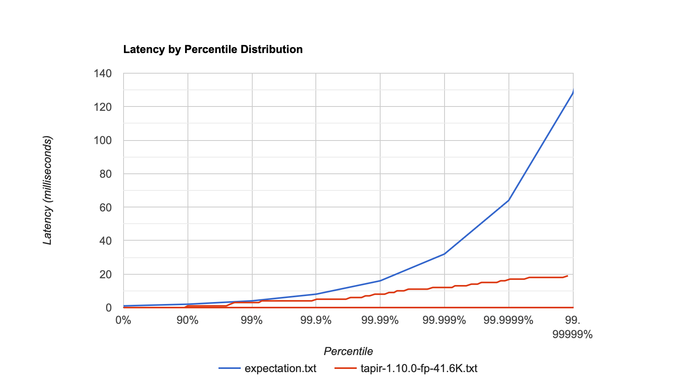 ] <!-- &*&*&*&*&*&*&*&*&*&*&*&*&*&*&*&*&*&*&*&*&*&*&*&*&*&*&*&*&*&*&*&*&*&*&*&*&*&*&*&*&*&*&*&*&*&*&*&*&*&*&*&*&*&*&* --> --- ## Performance improvements - summary .text-center[ 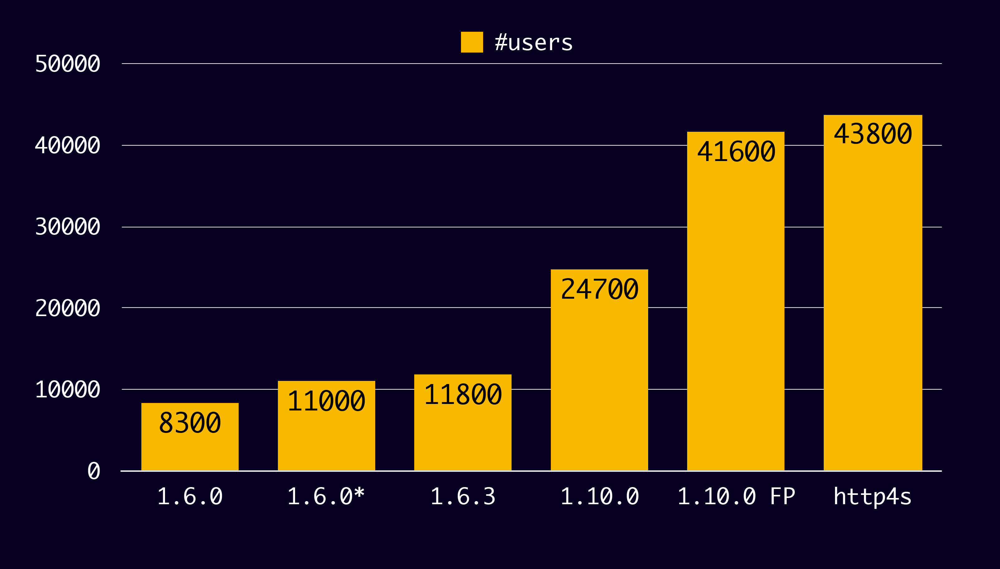 ] <!-- &*&*&*&*&*&*&*&*&*&*&*&*&*&*&*&*&*&*&*&*&*&*&*&*&*&*&*&*&*&*&*&*&*&*&*&*&*&*&*&*&*&*&*&*&*&*&*&*&*&*&*&*&*&*&* --> --- class: center, top <br /><br /><br /><br /><br /><br /><br /> # Takeaway <!-- &*&*&*&*&*&*&*&*&*&*&*&*&*&*&*&*&*&*&*&*&*&*&*&*&*&*&*&*&*&*&*&*&*&*&*&*&*&*&*&*&*&*&*&*&*&*&*&*&*&*&*&*&*&*&* --> --- ## Benchmarking .text-center[ ### A multi-round, multifaceted, time-draining endeavour. Watch <a href="https://www.youtube.com/watch?v=ElbYf2uiPmQ">Understanding Latency & Application Responsiveness</a> <br /> by Gil Tene prior to running any benchmarks. ] ??? The virtual machine does so many optimizations that it is difficult to ensure that what we are benchmarking is actually what we expect to benchmark. JMH is popular for writing microbenchmarks, that is, benchmarks that stress a very specific piece of code. Microbenchmarks are very peculiar, since stressing a small portion of code does not preclude what actually happens to that code when it is part of a larger application. <!-- &*&*&*&*&*&*&*&*&*&*&*&*&*&*&*&*&*&*&*&*&*&*&*&*&*&*&*&*&*&*&*&*&*&*&*&*&*&*&*&*&*&*&*&*&*&*&*&*&*&*&*&*&*&*&* --> --- ## Making an impact feels 🎉 .left-column[ 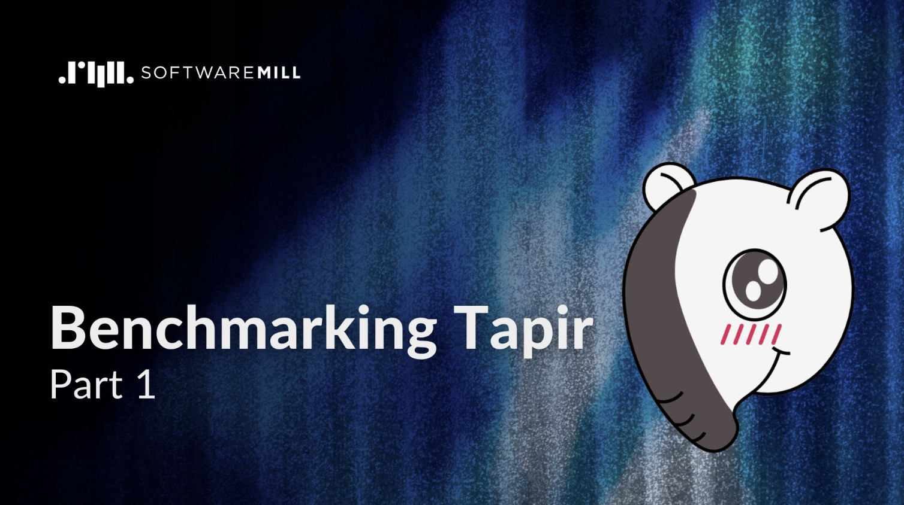 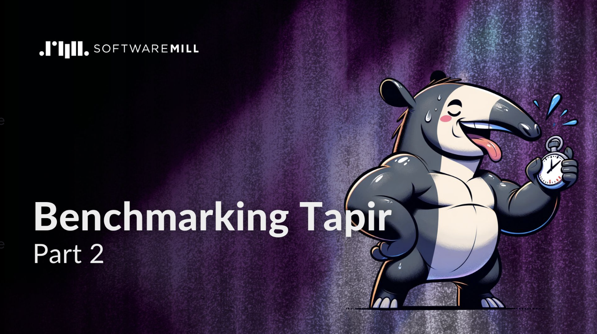 ] .right-column[ 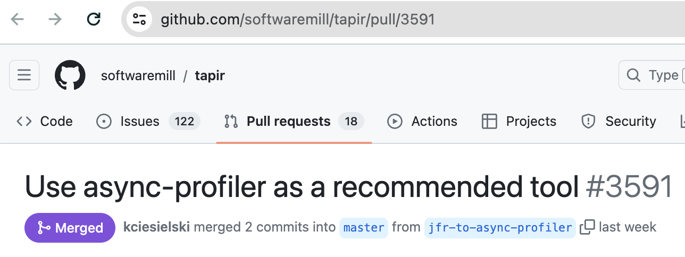 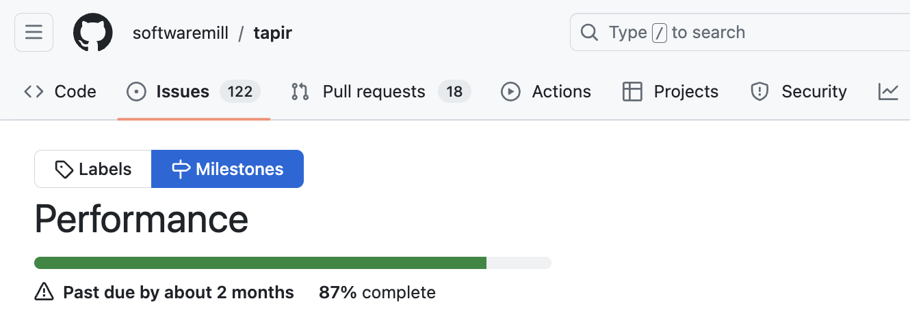 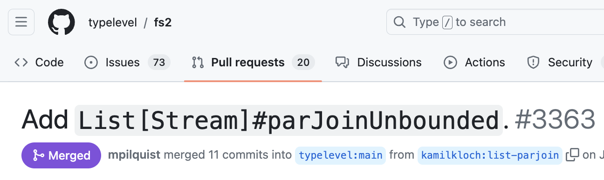 ] <!-- &*&*&*&*&*&*&*&*&*&*&*&*&*&*&*&*&*&*&*&*&*&*&*&*&*&*&*&*&*&*&*&*&*&*&*&*&*&*&*&*&*&*&*&*&*&*&*&*&*&*&*&*&*&*&* --> --- ## Thank you! Slides: https://kamilkloch.github.io/turbocharging-tapir-scalar Websocket benchmark: https://github.com/kamilkloch/websocket-benchmark [@kamil_k] <a>•</a> [@plokhotnyuk] [@kamil_k]: https://twitter.com/kamil_k [@plokhotnyuk]: https://twitter.com/aplokhotnyuk [FS2]: https://fs2.io [fiber]: https://typelevel.org/cats-effect/docs/concepts#fibers [supervisor]: https://typelevel.org/cats-effect/docs/std/supervisor [dispatcher]: https://typelevel.org/cats-effect/docs/std/dispatcher [compute-pool]: https://typelevel.org/cats-effect/docs/schedulers#jvm [io-local]: https://typelevel.org/cats-effect/docs/core/io-local [tapir]: https://github.com/softwaremill/tapir [gatling]: https://github.com/gatling/gatling [http4s]: https://github.com/http4s/http4s [zio-http]: https://github.com/zio/zio-http [zio]: https://github.com/zio/zio [CE]: https://github.com/typelevel/cats-effect [fs2]: https://github.com/typelevel/fs2 [HdrHistogram]: https://github.com/HdrHistogram/HdrHistogram [async-profiler]: https://github.com/async-profiler/async-profiler